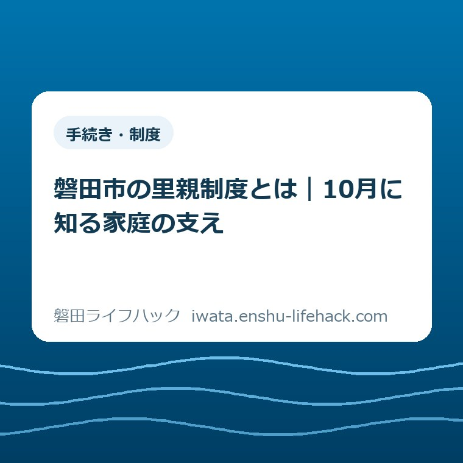
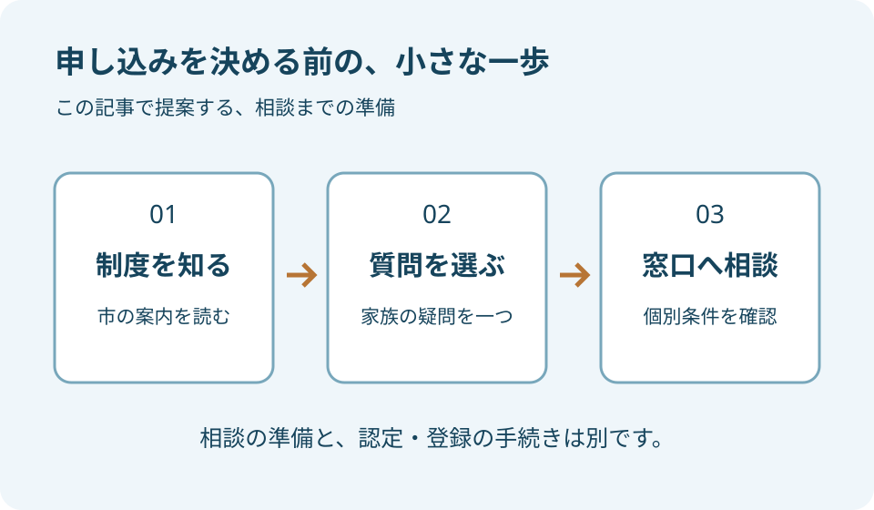
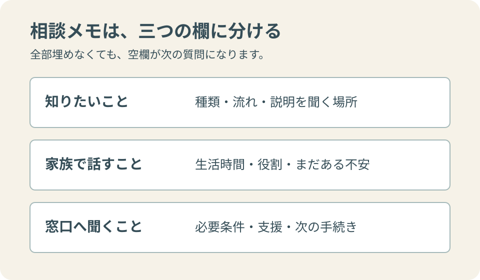

更新：2026.10.27 手続き・制度
磐田市の里親制度とは｜10月に知る家庭の支え

この記事の要点
Q. 里親制度に関心があります。最初に何を知ればよいですか？
A. 制度の目的と種類、登録までの流れ、相談先を市の公式案内で確認します。申請を急がず、家族の生活について分からない点を一つメモし、専門の窓口へ質問することから始められます。
10月は、制度を知るところから始める
大石浩之（磐田市／不動産業）です。子どもを支える活動に関心があっても、自分の家庭に何ができるかは、すぐに答えを出せる話ではありません。仕事の時間、同居する家族の気持ち、住まいの使い方を考えると、知りたいことがいくつも浮かびます。今回は実際に里親を経験した体験談ではなく、磐田市の公表情報を読む入口として書きます。
磐田市の「里親になりませんか」では、10月を里親月間と案内しています。里親制度は、さまざまな事情で家庭で暮らすことが難しい子どもを、認定された里親の家庭で養育する仕組みです。中心にあるのは、子どもの暮らしをどう支えるかという問いです。大人の希望だけで、迎える子どもや時期を決める仕組みとは考えないようにします。
私は、関心を持った日に申し込みまで決めなくてよいと考えます。今日は市の説明を読み、わからない言葉を一つ選ぶ。その段階でも、制度を知るための行動は始まっています。家族に話すときも「もう決めた」ではなく、「この仕組みを一緒に知りたい」と伝える方が、それぞれの不安や疑問を出しやすいのではないでしょうか。
この記事で行うのは、制度の全体像と相談の準備を整理することです。特定の家庭が登録できるか、どの種類に当てはまるか、給付の対象になるかは判断しません。公開資料で確認できる内容と、家庭ごとに窓口へ尋ねる内容を分けます。読んだ後に、自分の状況について聞く場所が一つ分かることを目指します。
まず、市の説明で役割と流れを分ける
市の案内は、委託期間や目的などによって里親を四つの種類に分けています。養育里親、専門里親、親族里親、養子縁組を希望する里親です。名称だけを見て自分で区分を決めるより、何を目的とする制度なのかを相談時に確かめます。養子縁組を前提とする区分もあるため、里親という言葉を一つの家族関係に置き換えない読み方が必要です。
登録までの道筋について、市は相談、申請、研修、調査、審査を経て認定・登録となる流れを示しています。関心があると伝えることと、登録の手続きに入ること、子どもを養育することは、それぞれ段階が異なります。相談の入口では、まず自分がどの段階の説明を聞きたいかを伝えると、質問の範囲をそろえやすくなります。
市の説明では、児童相談所が家庭の希望や生活環境などを考慮して、養育をお願いする子どもを決めます。面会や交流についての案内もあります。登録できればすぐに希望どおりの委託が始まる、と読み替えないことです。予定を立てる際には、家庭の都合を一方的な期限として置かず、どの段階で何が決まるかを尋ねます。
意外に感じる方もいるかもしれませんが、市のページには週末や長期休みの期間だけ預かる制度への言及もあります。ただし、誰でも希望した週末に参加できるという案内ではありません。利用できる関わり方や必要な手続きは確認が要ります。「長く一緒に暮らす方法以外の関わり方も知りたい」と、相談の質問にするところから始めます。

磐田で相談先を探すときの読み方
制度について尋ねる入口は、市公式ページに掲載されたこども若者家庭センターや西部児童相談所です。市の窓口は国府台のiプラザ、西部児童相談所は見付に所在します。詳しい連絡先は公式ページで確認できます。担当名や受付方法は変わる可能性があるため、記事の記憶だけで出向かず、訪問や電話の前に現行案内へ戻る使い方を勧めます。
相談会を利用したい場合は、ページの更新日だけでなく、個々の開催年月日を見ます。同じページには終了した催しと今後の予定が並ぶことがあります。「予約不要」という文字だけを見て当日の来場を決めず、どの会場、どの日程の説明なのかを一組で控えます。夜間や休日の会であっても、申込条件が同じとは限りません。
今回確認した市の案内には、終了済みの春・夏・秋の相談会に加え、翌年の予定も載っています。本記事では開催一覧を複製せず、公式の案内へ進む入口を示します。この記事を後から読んだ方にも、その時点の予定を確かめてもらうためです。関心を持った日に開催がなくても、制度の相談先を調べることはできます。
電話をかける前のメモは長くなくて構いません。たとえば「制度の種類を知りたい」「家族で話すための資料がほしい」「相談会で聞ける範囲を知りたい」という目的を一文にします。これは私の準備の提案であり、公式の申請様式ではありません。個人情報を最初からすべて書き出すより、どの情報が必要かを担当者に確認しながら進めます。
家族では、賛否の前に生活の条件を並べる
家族で最初に話す内容として、私は「賛成か反対か」の二択より、平日と休日の生活を並べる方法を提案します。誰が何時に家にいるか、急な予定変更が起きたら誰に相談できるか、家の中に落ち着いて過ごせる場所があるか。これらは登録の合否を自分で判定する表ではなく、専門の窓口へ質問を持っていくための下書きです。
家事や移動を担う人の負担を、気持ちの強さだけで埋める計画にはしたくありません。食事、洗濯、通院や学校に関わる予定など、日々の動きは複数あります。具体的な役割は子どもの状況によって変わるため、まだ知らない段階で約束を重ねず、どのような支援や相談が受けられるかと合わせて確認します。
同居する家族には、関心の理由だけでなく不安も出してもらいます。仕事との両立、住まい、今いる子どもとの生活など、考える点は家庭ごとに違います。「知らないから反対している」と片付けず、説明を聞いてから考えたいことを分けます。話す速度が違っても、結論の期限を一方的に決めない方がよいと私は考えます。
不動産の仕事をする私が気になるのは、部屋数という数字だけで暮らしを判断しないことです。同じ間取りでも、動線、生活時間、落ち着ける場所は違います。ただし、里親の住環境について私が条件を決めることはできません。必要な基準や確認事項は専門の担当者に尋ね、住宅の一般的な見方を認定要件の代わりにしないようにします。
良い点——養育中も相談につながる案内
市の説明の良い点は、里親になるまでの手続きだけでなく、養育中の悩みや手助けについて相談できることも示している点です。私は、入口の説明と続ける間の支えを同じページで読めることに意味があると考えます。「始める決意」だけを強調せず、迷ったときに相談する相手がいると知ることも、理解の一部です。
公費による養育に必要な経費の支給についても、市は案内しています。ただし、この記事から家庭ごとの収支を計算することはできません。支給の区分や時期、対象となる経費など、個別に確かめる内容が残ります。必要な費用を全部自分だけで負担すると決めつけることも、案内を読んで自己負担がないと決めつけることも避けます。
相談できる仕組みを知っても、何を聞けばよいか分からない場合があります。私は「困ったときの連絡先を知りたい」と、そのまま尋ねてよいと考えます。平常時の相談、急な困り事、予定変更の連絡など、場面によってどの窓口につながるのかを聞けば、抽象的な安心を具体的な連絡方法へ変えられます。
支えの案内は、家庭の側がすべてを一人で抱える前提を見直す材料になります。一方で、相談先があることを、誰かに任せれば家庭内の調整が要らなくなるという意味にはしません。家族で話すことと、専門職へ相談することは両方あります。それぞれの役割を混ぜない方が、頼るときにも事情を伝えやすくなるはずです。
入学時の給付は、制度の入口と分けて確認する
磐田市には、養育する児童の入学時を支える里親給付金の案内があります。市が定める里親の区分、対象となる児童の入学、申請年度の住民登録などの条件が示されています。里親制度に関心を持った人全員への給付ではありません。制度を知る相談と、既に養育している方の給付申請は分けて読みます。
給付のページを読むとき、私は金額の欄より先に対象者と期限の欄を見ることを勧めます。自分の状況に関係するかを確かめないまま金額だけを家計に入れると、後から前提が変わるためです。支給対象かどうかは、養育している児童や入学の状況を担当窓口に伝えて確認してください。この記事だけで適用を判断しないようにします。
必要書類も、家庭内で持っているものと、改めて確認するものを分けます。市のページには申請書や登録・措置・入学に関する書類が挙げられています。書類名が分からなければ、似た名前の紙を自己判断で代用する前に相談します。原本か写しか、何が入学の証明になるかという実務の確認も、申請前の質問になります。
家族に給付の話を共有する場合は、ページ名と確認日、問い合わせが必要な点を添えます。「もらえるらしい」という一文だけでは、対象や時期が抜けてしまいます。必要な費用の支えを知ることは役立ちますが、金額を理由に養育を引き受けるかどうかを急いで決める話にはしません。まず子どもの暮らしと、家庭で担う役割の理解を置きます。
注文したい点——相談の入口が一目で選べるとよい
案内に注文したい点があるとすれば、初めて読む人が「制度を知りたい」と「具体的に申請したい」を一目で分けて進める表示です。これは市の対応を受けた体験談ではなく、公開ページを読んだ私の意見です。窓口名が分かっても、どの程度考えが固まってから連絡すればよいのか、迷う読者はいると思います。
日程の表示も、開催年と会場、予約の扱いをまとまりとして確認できると助かります。複数の会が一ページに並ぶ場合、最初に見つけた条件を別の日程にも当てはめてしまいやすいためです。読者側では、必要な部分だけを切り取る前に、見出しから次の見出しまでを読むと取り違えを減らせます。
ただし、公開案内だけで一人ひとりの疑問に答え切るのは難しい面もあります。私は、説明が足りないと感じたとき、すぐに結論をつけるより「この点は窓口で聞く」と線を引く方が実用的だと考えます。一般的な制度の説明と、その家庭や子どもの状況に応じた相談には役割の違いがあります。
この記事も、その違いを残すための案内です。家族の事情を知らないまま、向いている、向いていないと評価しません。関心がある方に一律の決断を勧めることもしません。公式情報を読んで質問が具体的になったら、その質問を持って担当者へ進む。読書と相談をつなぐところまでが、地域の暮らしの案内としてできることだと考えます。
対案・結論——一枚の相談メモを作る
今日できる対案は、相談メモを一枚だけ作ることです。上段に「知りたいこと」、中段に「家庭でまだ話していないこと」、下段に「窓口へ確認すること」を書き分けます。完成した計画書にする必要はありません。空欄を残せば、まだ分からない部分が見えます。申請に必要な書類とは別の、自分たちの質問整理として使います。
知りたいことには、制度の種類、登録までの流れ、相談会で聞ける内容などを置けます。家庭で話していないことには、生活時間や家事の役割、不安を置きます。窓口へ確認することには、支援の仕組み、住環境の確認、書類の扱いなどを置きます。ここに挙げた項目は私の例であり、全家庭が同じ答えを用意するものではありません。
相談後は、聞いた説明と自分の解釈を分けて追記します。担当者の説明をその場ですべて理解できなければ、もう一度確認する項目を残します。家族へ共有するときも、結論だけでなく、次に何を調べるかを伝えます。誰か一人が説明を抱え込むより、必要な資料へ戻れる状態を作る方が話し合いを続けやすくなります。
子どもの居場所や相談先について、別の制度も知りたい場合は、学校内の支援を調べる記事や、子育て支援センターの利用を確認する記事も参照できます。里親制度と同じ仕組みではありません。目的が違う案内を並べると、今の疑問がどの相談に近いかを考える手がかりになります。

大石の視点——まだ決めない時間を残す
私が大切にしたいのは、子どもを支えたい気持ちと、家庭でできることを確かめる時間の両方です。気持ちを否定する必要はありませんが、勢いだけで生活の約束を増やさない。私はこの順番で考えます。暮らしに関わる仕事をしているからこそ、日々続ける人の時間や体力を、見えないままにしないでおきたいのです。
一方で、準備を細かく書くほど、関心を持ったばかりの人が「全部整ってからでないと話を聞けない」と感じないか、私は迷います。そこで、今日の到達点は申し込みでも自己判定でもなく、質問を一つ持つことにしました。分からないまま相談の説明を読む段階があってもよい。途中で考え方が変わったら、その変化も言葉にできます。
里親月間を、すぐに結論を出す期限にしなくてもよいと思います。制度を知るきっかけとして使い、その後も必要な情報へ戻れるようにする。市の公式ページを保存し、相談先と確認した日を控える。家庭内の話し合いは、誰かの不安を消すための説得ではなく、同じ材料を見ながら考える時間にしたいと私は考えます。
今回の記事は、里親として子どもを迎えた経験や、個別の相談事例を記したものではありません。公表情報の確認と、私が提案する読み方を区別しました。家族が何を選ぶかは、専門の説明を受けて考えることです。今日は一つの疑問が言葉になれば十分です。次に相談できる場所が分かった状態で、続きを考えられます。
よくある質問
里親制度に関心があります。今すぐ申請を決める必要がありますか？
制度を知る段階と、申請して認定・登録を目指す段階は分けて考えられます。市の公式案内で相談先を確認し、まず何を知りたいかを伝えてください。家庭の状況に関する疑問は窓口へ相談し、この記事だけで登録の可否を判断しないようにします。
里親になると、必ず養子縁組をすることになりますか？
市の案内は、目的や委託期間などによる複数の種類を示しており、その中に養子縁組を希望する里親があります。里親という言葉をすべて同じ家族関係として扱わず、各区分の目的や手続きを専門の窓口で確認してください。
市の里親給付金は、関心がある人なら受け取れますか？
関心を持った人全員への給付ではありません。市のページには、里親の区分、養育する児童の入学、住民登録などの条件が示されています。申請期限や書類も含め、現行の案内を読み、対象になるかを市の担当窓口に確認してください。
参考にした公式情報
- 里親になりませんか／磐田市（2026年4月16日更新、2026年10月27日確認）
- 磐田市里親給付金／磐田市（2025年2月13日更新、2026年10月27日確認）
最終確認日：2026-10-27 ／ 本記事は公表情報と執筆者の見解を分けて記載しています。制度・数値・公開状況は変更される場合があるため、最新情報は磐田市公式ページでご確認ください。